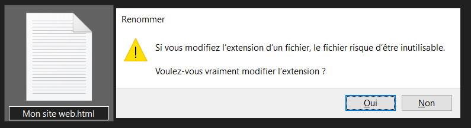
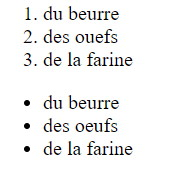
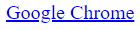

/ hmtl /
Créer un fichier html :
Pour cela il suffit de changer l’extension d’un document texte .txt en .html
Les balises :
Le code dans le langage html est composé de suite de balises qui forment le site sur lequel vous naviguer, il dxiste de nombreuses balises qui, pour certaines, fonctionnent ensembles.
Elles permettent d’écrire des titres, d’écrire des paragraphes, de placer des images et tant d’autres choses
Elles fonctionnent par deux, une ouvrante et une seconde fermante.
Comme dans ce paragraphe d’exemple : p Je m’appelle Guilhem /p
Insérer des titres et des paragraphes :
Pour insérer des titres il faut utiliser la balise h1 et pour les paragraphes p
Il existe une hiérarchie naturelle des titres, h1 sera toujours plus important aux yeux du site qu’un h2
Pour que du texte s’affiche il faut écrire notre texte entre les balises qui ouvre et ferme la zone de texte.
Créer des listes ordonnées ou non :
Pour créer une liste il faut utiliser une combianaison de balises.
Il faut entourer la liste par des balises ol /ol ou ul /ul et écrire chaque élément entre des balises li /li
En voilà un exemple :
ol li du beurre /li li des ouefs /li li de la farine /li /ol ul li du beurre /li li des oeufs /li li de la farine /li /ul
Insérer des liens web :
En utilisant la balise a /a l’élément spécifié devient cliquable et en utilisant l’élément href="" on peut spécifier le site recherché.
En exemple :
a href="https://www.google.com/intl/fr_fr/chrome/" Google Chrome /a
Insérer des images et un lien entre deux pages :
En utilisant la balise img src="", le src permet de localiser l’image soit sur internet soit dans le fichier du site.
img src="image/logo.jpg"/
Nous pouvons cumuler image et lien cliquable
a href="./home.html" img src="image/logo.jpg"/ /a
Insérer des images et un lien entre deux pages :
En utilisant la balise img src="", le src permet de localiser l’image soit sur internet soit dans le fichier du site.
img src="image/logo.jpg"/
Nous pouvons cumuler image et lien cliquable
a href="./home.html" img src="image/logo.jpg"/ /a
/ .css /
Créer un fichier css :
Pour cela il suffit de changer l’extension d’un document texte .txt en .css

Donner du style :
Grâce aux fichiers css nous pouvons donner du style à nos pages html. Pour celà il faut spécifier dans le code html la référence du fichier .css
Nous pouvons styliser tous les éléments html: les titres, les paragraphes, les images et même la forme même de la page.
Pour celà il faut spécifier l’élément à modifier puis lui appliquer les modifications grâce aux balises propres au css.
En voilà quelques exemples :
*display: block;
*margin: 0px;
*font-family: Comic Sans MS;
*background-image: url();
*padding: 5px;
*width: 180px;
*height: 180px;
#class et .id :
On peut dans le fichier .html des class et des id aux différents éléments.
Les class permettent de regrouper tous un panel d’élément auquels on souhaite appliquer une même modification.
Les id eux permettent de différencier un élément indépendament des autres, pour lui appliquer des modifications propres.